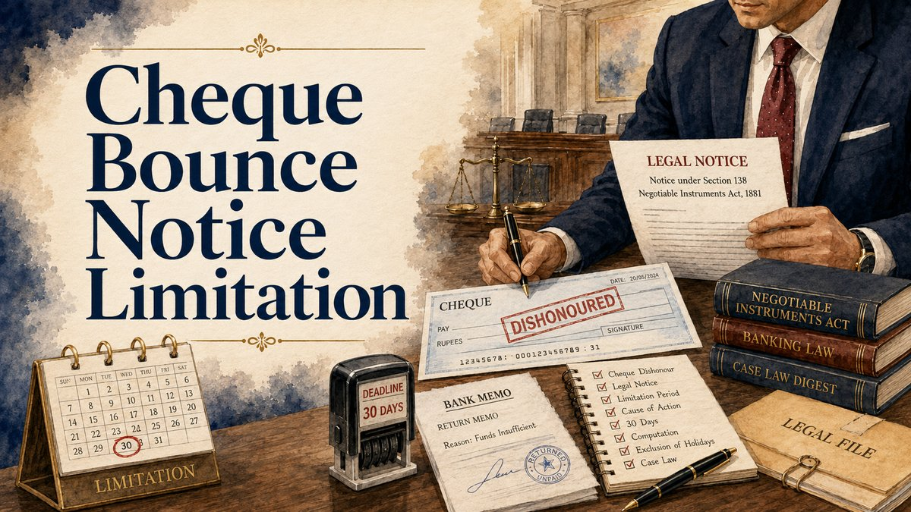

Section 138 creates an offence only when every statutory ingredient is satisfied. The cheque and return memo must be read with the underlying debt, the dates of presentation and bank information, the written demand notice, proof of receipt, the fifteen-day payment period and the complaint-filing record.

What Section 138 does
Section 138 of the Negotiable Instruments Act, 1881 addresses dishonour of a cheque drawn on an account maintained by the drawer for payment of a legally enforceable debt or other liability. If the statutory conditions are completed, the drawer may be punished with imprisonment extending to two years, fine extending to twice the cheque amount, or both.
The prosecution is complaint-based. Dishonour is an essential event, but the offence is not complete on the return-memo date. The payee or holder in due course must take the prescribed notice step, the drawer must receive the statutory payment opportunity, and the complaint must then be instituted in accordance with Section 142.
The cumulative ingredients of the offence
1. Cheque: the accused drew the cheque on an account maintained by that person.
2. Liability: the cheque represented payment, wholly or partly, of a legally enforceable debt or other liability.
3. Presentation: the cheque was presented within the statutory period or its operational validity, whichever expired earlier.
4. Dishonour: the bank returned it unpaid for a reason capable of attracting Section 138 on the facts.
5. Written demand: the payee or holder in due course issued a written demand notice within thirty days of receiving bank information about dishonour.
6. Receipt and non-payment: the drawer failed to pay within fifteen days after receipt of the notice.
7. Complaint: the complaint was filed by the proper complainant, before the competent Magistrate and within the Section 142 period, subject to condonation where legally available.
These requirements are cumulative. A strong transaction claim cannot cure a defective statutory notice, and perfect notice records cannot cure the absence of a legally enforceable liability.
Cheque validity and presentation
The text of Section 138 refers to presentation within six months from the cheque date or within its validity, whichever is earlier. Under current Reserve Bank of India directions, banks do not pay cheques presented beyond three months from the date of the instrument. The practical presentation window is therefore ordinarily three months, but the instrument, bank record and applicable direction should be verified in each file.
Preserve the deposit slip, bank statement, return memo and date on which dishonour information was actually received. Where the cheque was presented more than once during validity, each presentation and return should be recorded separately before selecting the notice chronology relied upon.
Dishonour reasons beyond “insufficient funds”
The statutory language expressly refers to insufficient funds and an amount exceeding the arrangement with the bank. Supreme Court authority has also recognised that reasons such as “account closed”, “payment stopped”, or certain signature-related returns may attract Section 138 where they reflect the drawer's failure to honour the cheque and the remaining statutory conditions are satisfied.
The return reason must still be read with the facts. A bank memo is prima facie evidence of dishonour under Section 146, but it does not by itself establish the underlying debt, drawer liability, notice compliance or every contested defence.
Legally enforceable debt or other liability
The explanation to Section 138 requires a legally enforceable debt or other liability. The cheque should therefore be matched with the transaction that allegedly generated the obligation: loan transfer, invoice, supply, work completion, settlement, account confirmation, guarantee, rent, professional fee or another enforceable arrangement.
Prepare an amount reconciliation. Compare the cheque amount with principal, interest, tax, debit notes, part-payments, credits and any settlement terms existing on the date of presentation. A material mismatch may affect notice drafting, the presumption analysis and the ultimate proof of liability.
Section 118 and Section 139 presumptions
Once execution or signature of the cheque is admitted or proved, Sections 118(a) and 139 ordinarily require the court to draw presumptions of consideration and that the cheque was received towards discharge of a debt or liability. The Section 139 presumption includes the existence of a legally enforceable debt or liability.
The presumptions are rebuttable. The accused need not prove the defence beyond reasonable doubt; a probable defence may be established on the standard of preponderance of probabilities. The defence may rely on its own evidence, the complainant's documents, cross-examination, surrounding circumstances and inherent weaknesses in the asserted transaction.
A bare denial is ordinarily insufficient. At the same time, the presumption does not relieve the complainant from answering a credible, evidence-based challenge to financial capacity, transaction existence, payment, alteration, authority, cheque issuance or the amount claimed.
Blank, post-dated and security cheques
A voluntarily signed blank cheque is not automatically outside Section 138 merely because particulars were completed later. The real questions include authority to complete the instrument, the transaction, the amount legally due and whether the cheque was presented consistently with the parties' arrangement.
Similarly, describing a cheque as “security” is not conclusive. A security cheque may mature for presentation if the secured obligation has become due and remains unpaid. If no enforceable liability had crystallised when it was presented, or the obligation had already been discharged or altered, that factual position may support a defence.
The thirty-day demand-notice requirement
The payee or holder in due course must make a written demand for the cheque amount within thirty days from receipt of information from the bank regarding dishonour. The notice should identify the cheque, return information, parties, transaction and demand with enough clarity to connect it to the statutory claim.
A notice demanding additional amounts is not necessarily invalid if the cheque amount is clearly and separately demanded. Drafting should nevertheless avoid ambiguity about the statutory sum, especially where interest, costs, damages or several cheques are included.
Keep the final signed notice, annexures, postal or courier receipt, complete tracking report, email record where used, returned envelope and address material. The complainant may need to prove actual receipt, refusal, avoidance or facts supporting deemed service.
The fifteen-day payment window
The drawer has fifteen days after receipt of the statutory notice to pay the cheque amount. The offence matures only when that payment period expires without payment. A written reply is not a statutory substitute for payment, and the Act does not impose a separate fifteen-day deadline merely to send a reply.
A reply may still be important. It can record payment, dispute the transaction, identify an incorrect amount or party, preserve a security-cheque arrangement, raise service or limitation issues, or place settlement communications on record. Careless admissions in a reply can also affect the later trial.
Cause of action and complaint limitation
After the fifteen-day payment period expires, the cause of action arises for filing the complaint. Section 142 ordinarily requires the complaint within one month from the date on which the cause of action arises. The court may take a delayed complaint if the complainant satisfies it that sufficient cause prevented timely filing.
Calculate the dates from the actual record rather than using a generic online calculator. Receipt, refusal, returned service, court holidays, multiple notices, re-presentation and part-payment can require legal analysis. The safest working document is a cheque-wise limitation table with source documents for each date.
Which court has territorial jurisdiction?
Section 142(2) links territorial jurisdiction to the banking route. Where the cheque is delivered for collection through an account, the relevant place is ordinarily the branch where the payee or holder in due course maintains that account. Where the cheque is presented otherwise than through an account, the relevant place is ordinarily the branch of the drawee bank where the drawer maintains the account.
Do not decide jurisdiction from the complainant's residence or business address alone. Preserve the deposit bank, account branch, drawee branch, presentation mode and bank endorsements before identifying the competent Magistrate.
Company and partnership cheques
Where the drawer is a company, firm or other association covered by Section 141, the complaint must distinguish the entity, signatory and persons alleged to have been in charge of and responsible for conduct of its business when the offence occurred. Vicarious criminal liability is statutory and cannot be imposed merely because a person held a designation.
Collect the cheque, account-holder name, entity constitution, authorised-signatory material, board or partnership records, resignation documents where relevant and specific communications showing each proposed accused person's role. Company and partnership cases require separate pleading analysis and should not be drafted by substituting names in an individual-drawer template.
Summary trial, evidence and interim compensation
Section 143 provides for summary trial of Section 138 complaints, subject to the Magistrate's power to adopt another procedure where required. Section 145 permits complainant evidence by affidavit, and Section 146 makes the bank's return slip or memo prima facie evidence of dishonour.
Under Section 143A, the trial court may direct interim compensation up to twenty per cent of the cheque amount in the specified procedural situations. The Supreme Court has clarified that this power is discretionary rather than automatic; the court should consider the relevant circumstances and record reasons.
Settlement and compounding
Section 147 makes offences under the Act compoundable. Settlement may occur before complaint, during trial, in appeal or at a later permissible stage, but the terms should be precise and should address payment dates, default, compounding applications, withdrawal or disposal, costs, return of documents and connected civil or recovery proceedings.
Payment after the statutory fifteen-day period does not automatically erase an already completed offence. Its effect depends on settlement, compounding, court orders and the procedural stage. Informal payment promises should not be treated as a substitute for limitation or appearance compliance.
Appeal after conviction
Section 148 permits an appellate court to order deposit of at least twenty per cent of the fine or compensation awarded by the trial court, in addition to any interim compensation paid under Section 143A. Appeal strategy should therefore account for the conviction order, compensation, suspension of sentence, deposit directions and settlement position.
Complainant-side document checklist
- Original cheque and clear scanned copy.
- Deposit record, bank statement and original return memo.
- Underlying contract, invoice, loan transfer, ledger, delivery proof or settlement.
- Cheque-wise principal, interest, payment and balance calculation.
- Signed demand notice and every annexure.
- Dispatch receipt, tracking report, delivery proof and returned envelope.
- Corporate authorisation and entity documents where applicable.
- Complaint limitation chart and jurisdiction note.
- Reply, admissions, part-payments and settlement communications.
Drawer or accused-side document checklist
- Notice, envelope, receipt date and any reply.
- Cheque-book and account records relevant to issuance and presentation.
- Payment, part-payment, replacement cheque and settlement proof.
- Contract, invoice objections, debit notes, defects, returns and reconciliation.
- Communications showing security purpose, conditional delivery or altered arrangement.
- Complaint, annexures, summons, next date and court orders.
- Company-role, resignation and authority records where Section 141 is invoked.
- A cheque-wise defence and limitation chronology.
Common mistakes
- Treating dishonour alone as completion of the offence.
- Calculating dates from memory instead of the bank and service records.
- Demanding an unclear amount without separately identifying the cheque sum.
- Assuming that “security cheque” is either a complete defence or legally irrelevant in every case.
- Ignoring part-payments and credits while claiming the full cheque amount.
- Filing in a court without checking the Section 142(2) banking route.
- Adding every director solely on the basis of designation.
- Assuming interim compensation under Section 143A is automatic.
- Continuing settlement discussions while missing notice, complaint or appearance dates.
- Relying on cropped screenshots when primary bank, postal and transaction records exist.
Conclusion
A Section 138 file is built through a statutory sequence, not merely through possession of a dishonoured cheque. The liability, cheque, presentation, return reason, written demand, receipt, payment window, complaint date, jurisdiction and party structure must all be established from the documents.
The presumptions under Sections 118 and 139 are significant, but they are rebuttable. Both complainant and accused should therefore prepare an evidence-based chronology that separates the statutory dates from the disputed transaction and defence issues.
Last updated on: 29/07/2026
Useful internal pages
References / Sources
- Negotiable Instruments Act, 1881 - India Code.
- Reserve Bank of India FAQ - three-month period for presenting payment instruments.
- Rangappa v. Sri Mohan, (2010) 11 SCC 441.
- Basalingappa v. Mudibasappa, (2019) 5 SCC 418.
- Sripati Singh v. State of Jharkhand, decided on 28 October 2021.
- Laxmi Dyechem v. State of Gujarat, (2012) 13 SCC 375.
- Bridgestone India Pvt. Ltd. v. Inderpal Singh, (2016) 2 SCC 75.
- Rakesh Ranjan Shrivastava v. State of Jharkhand, 2024 INSC 205.